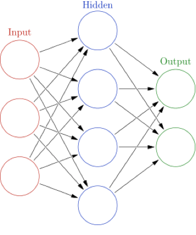

Important Note:
Poseidon has not been tested with collection rates above 100Mbps, but we hope to achieve minimally 1Gbps, and ideally up to 10Gbps.
Poseidon is a joint effort between two of the IQT Labs: Cyber Reboot and Lab41. The project's goal is to explore approaches to better identify what nodes are on a given (computer) network and understand what they are doing. The project utilizes Software Defined Networking (SDN) and machine learning (ML) to automatically capture network traffic, extract relevant features from that traffic, perform classifications through trained models, convey results, and provide mechanisms to take further action. While the project works best leveraging modern SDNs, parts of it can still be used with little more than packet capture (pcap) files.
The Poseidon project originally began as an experiment to test the merits of leveraging SDN and machine learning techniques to detect abnormal network behavior. While that long-term goal remains, the unfortunate reality is that the state of rich, labelled, public, and MODERN network data sets for ML training is pretty poor. Our lab is working on improving the availability of network training sets, but in the near term the project remains focused on 1) improving the accuracy of identifying what a node is (based on captured IP header data) and 2) developing Poseidon into a "harness" of sorts to house machine learning techniques for additional use cases. (Read: Not just ours!)
Poseidon strives to make it easy to achieve near-time situational awareness of devices on a network. By leveraging SDNs, Poseidon provides centralized visibility of devices across the entire network and enables automated action that aims to go above and beyond the industry-standard of simply: "detect and block". Poseidon's goals include knowing what is on your network, what those devices are doing, and whether or not you should care enough to perform further action-verbs such as: "degrade", "throttle", "restrict", or "deceive". You can read more about this concept here.
Poseidon aims to provide the following key capabilities, which are in varying levels of maturity:
Poseidon has not been tested with collection rates above 100Mbps, but we hope to achieve minimally 1Gbps, and ideally up to 10Gbps.
Poseidon's internals use tcpdump, a popular command-line packet analyzer and network traffic capture tool, for traffic collection and storing that traffic as PCAP files. Poseidon only uses the headers of packets in the PCAP files, however there's not a great way currently in tcpdump to collect only the headers so we have submitted a pull request to the tcpdump project that adds additional flags for zeroing out payloads, removing payloads altogether, and masking IP addresses. You can read more about our pull request here. Since it's not merged yet, we still have to compile tcpdump ourselves against the fork with the modifications to be able to do collection without including payloads, but we hope to get it merged upstream so that the additional flags come pre-packaged when anyone installs the official tcpdump tool.
You can use Poseidon to analyze pre-collected captures from both SDN and traditional networks. Head over to the operations guide for more details.
Poseidon's traffic analysis is done via a number of plugins that are orchestrated by Vent. These plugins can be enabled or disabled by modifying the .vent_startup.yml file at the root of the Poseidon project (for more information check out our operations guide). By default there are four different plugins enabled that do traffic manipulation and analysis:
Poseidon's training set for device classification is limited and currently is only able to classify into six classes, we need a better corpus of network traffic to improve this.
Poseidon uses PoseidonML's OneLayer machine learning model by default for doing device classification. The OneLayer model is a neural network with one hidden layer:

The OneLayer model takes a PCAP file and determines the host it is trying to classify based on hosts found in the sessions (this is why we use PCAP Splitter mentioned above, to ensure that the PCAP is only sessions from the perspective of the host we want to classify). The headers of the packets for each TCP or UDP session are then run through the neural network and classified with confidences, outputting a message that will look something like this:
Message: {
"98:01:xx:xx:xx:xx": {
"classification": {
"confidences": [0.6856065894902689, 0.2727088338248893, 0.022470232107183397],
"labels": ["Developer workstation", "Unknown", "Active Directory controller"]
},
"timestamp": 1498669414.355485,
"valid": false,
"decisions": {
"behavior": "normal",
"investigate": false
}
}
}classification field indicates the labels that the classification model has assigned to the device and the confidence field is the associated coonfidences for those labels. The top 3 device types are returned, which may include an Unknown label. For more information on how to use this model and how it works, please read our blog post about it here.
Poseidon's ability to detect abnormal using PoseidonML's machine learning models results in an unacceptable rate of false positives due to a lack of good training data, so it is not enabled by default.
Poseidon's ability to detect abnormal devices is the least mature of Poseidon's core features. Currently, due to the high false positive rate with our current models, all traffic is set to normal. Until better data can be collected and used for training, we are not optimistic about being able to turn this feature back on without a high false positive hit rate.
You can use Poseidon to just have better situational awareness of the current state of your network, even if you don't want to use the other features Poseidon has to offer. See the operations guide for more details.
Poseidon keeps track of devices seen on the network from the perspective of the SDN controller. This network state is available through the Poseidon API which is also what CRviz uses to visualize Poseidon networks. As additional metadata about the devices is learned, the state of those devices are updated.
One of the nice things about SDN is the ability to easily push down changes to the network across any switch in the fabric via the SDN controller. Poseidon hooks into the controller to not only get notifications of what is happening on the network, such as a new device was just plugged in, but it also pushes down changes such as mirroring traffic from one port to another for a period of time and turning it off. While currently the actions Poseidon knows how to do automatically are limited to mirroring traffic and shutting down ports, we envision more complex and sophisticated actions that could allow for a more granular and dynamic policy to be pushed out automatically as the network changes.
Poseidon has a lot of moving parts and can be used in a variety of ways. Below are the major pieces and how they fit into the bigger picture of Poseidon's goals.
Poseidon itself runs in a Docker container and is responsible for interacting with an SDN controller. Here is a high level view of the big picture:

Pardon the dust, this diagram is still being created, check back later.
Pardon the dust, this diagram is still being created, check back later.
Pardon the dust, this diagram is still being created, check back later.
Pardon the dust, this diagram is still being created, check back later.
Pardon the dust, this diagram is still being created, check back later.
Pardon the dust, this diagram is still being created, check back later.